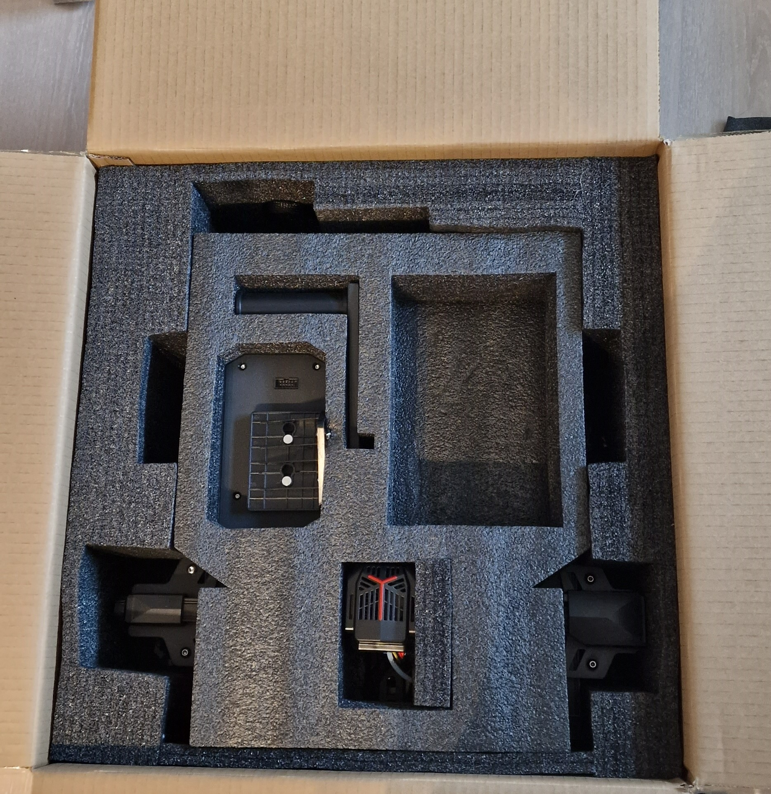
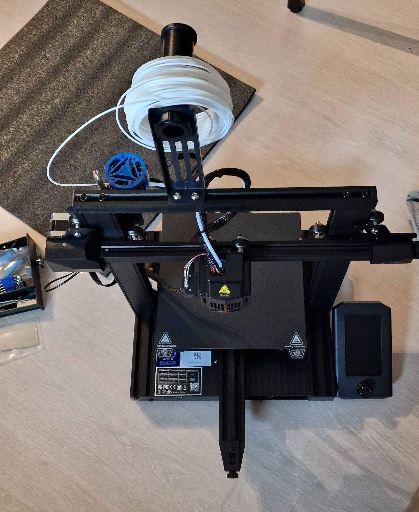

3D-Printing
I bought a 3D-Printer :)
A Creatily Ender 3 V2 Neo:
Unboxing


Initial Setup
The initial setup was quite easy.
It was a simle task of screwing in the gantry frame to the base and attaching the screen.
After that, just hook it up to power and you can start :)
I followed the guide in the provided manual
here
The first thing i did was level the bed and set the Z-Axis offset.
First Prints
On the included Micro-SD-Card were two .gcode files for test-printing.
However, i wantet to print something myself. So i went to Thingiverse and searched for some calibration prints.
In the end, i used
this
cube for my first print.
Now to be able to print the .stl file, we first need a slicer, to prepare the file for the printer.
For the time being im using the creatily slicer, its powerful enough for me.
There are other options like cura, simplify3D and many more. - you cant go wrong with any of them